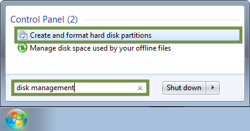
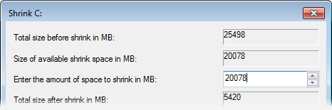

Please choose a topic to get started.
Modest System Requirements
Ubuntu Budgie works well on both high-end to older computers, optimized to be functional, while light on system resources.
Minimum
- Pentium i3 - approximately created in 2013
- 2 gigabytes (GB) of RAM
- 32 gigabytes (GB) of disk space
- Raspberry Pi4B
- 2 gigabytes (GB) of RAM
- 32 gigabytes (GB) SD Card
Recommended
- Pentium i5 - approximately created in 2017
- 4 gigabytes (GB) of RAM
- 60 gigabytes (GB) of disk space
- Raspberry Pi4B
- 4 gigabytes (GB) of RAM
- 60 gigabytes (GB) SSD
The operating system will run much more efficiently if your computer meets or surpasses the recommended requirements.
Preparing to Install
Ubuntu Budgie is relatively simple to set up, whether you're looking to replace your existing operating system or install Ubuntu Budgie alongside an existing one - such as Microsoft Windows or another GNU/Linux distribution.
For the best results:
- Back up any important data to another storage device.
- Connect to the Internet to install all available updates during installation.
- Stay connected to the Internet to install all available updates.
- Plug in your device to the mains if it is running on battery power.

The live session you are currently in right now is a good opportunity to test Ubuntu Budgie without modifying your computer, allowing you to test all of your peripherals are working as intended before committing to installing it on your machine. Once you are ready, double click the installation icon from the desktop.
Modern UEFI-based computers
If you have a modern PC that uses the Unified Extended Firmware Interface (UEFI), you may need to disable Secure Boot (or enable the Unlock Bootloader option) prior to installation, particularly if an operating system was pre-installed.
If you are using a legacy BIOS machine, you do not need to do this.
Especially when dual booting, it is important that you boot your system in the correct mode and use the 64-bit image , as you cannot boot an operating system installed in BIOS mode after installing a UEFI-enabled operating system or vice versa.
Booting in BIOS mode on a UEFI system with a GPT-formatted disk will also show a "protection layer". Do not worry, your data is not lost or corrupt!
Swap
For computers that start to run low on memory (RAM), the operating system will start swapping to disk. Known as a "paging file" in Windows. Performance will decrease when running low on memory and could possibly freeze if you completely run out of memory without anywhere to swap.
Dual Booting
Should you wish to install Ubuntu Budgie alongside your existing operating system, your partitions need to be shrunk. This results in sections of your hard disk being split between multiple operating systems.
To minimize the risk of data loss or failure, ensure that:
- There is enough free space. 10 GB minimum is recommended.
- Back up important data to another drive.
- Defragment the hard drive.
- Ensure Windows has been cleanly shut down (not hibernated).
Which approach would you prefer?
The simplest method is to use the installer.
The installer scans your disks for existing operating systems and provides a choice on what you'd like to do.
You will see an option similar to this:

Followed by:

Do not interrupt or power off the computer during a resize operation.
If you do, data loss or a partition table corruption could occur. Please double check your changes before proceeding.
The installer may show a spinner cursor for a long period of time, depending on the size of your disk.
When you next boot Windows, run
chkdsk /f from the command prompt to check the
file system for errors. Windows may schedule this automatically. This
ensures consistency for the NTFS file system.
Use GParted or the installer's "Custom" option.
 GParted is available during the live session only.
It is located under the System Tools menu.
GParted provides complete flexibility over your partitions,
primarily for power users who know how they'd like to layout their disks.
This method makes changes to partitions prior to installation.
GParted is available during the live session only.
It is located under the System Tools menu.
GParted provides complete flexibility over your partitions,
primarily for power users who know how they'd like to layout their disks.
This method makes changes to partitions prior to installation.
After completing operations to your disk, you can leave the remaining space unallocated, whereby the installer will detect this unused space to install Ubuntu Budgie to.
Using the Installer's "Custom" option.
Instead or in addition to GParted, the Custom option during the installation wizard can also configure and resize your partitions as well as choose mount points. Dividing your disks can make it somewhat easier to re-install the operating system later if desired.
You can specify these mount points:
/- The base for Ubuntu Budgie/boot- Bootloader and kernels/home- Your personal files and folders/tmp- Temporary files/usr- Contains most of the applications (binaries, documentation, libraries, etc)/var- Variable data (such as system logs)/srv- Data for System Services (typically used for server configurations)/opt- Additional software unmanaged by the package manager (such as Spotify)
Spotify)
Creating separate partitions for all above mount points is not necessary.
The commonly partitioned directories being /, /home
and /boot. These mount points can also be set across different
physical disks, for instance, if you'd like the OS / on an SSD,
but your personal files /home on a mechanical hard drive.
Shrink your system disk within Windows.
Applies to Windows Vista and later.
If you are using Windows XP or earlier, you will need to use the Simple or Advanced method to shrink your disk.
Newer versions of Windows provide a tool to shrink the NTFS volume from within Windows. This is a safer bet if it's essential that Windows still boots on your computer while experiencing Ubuntu Budgie.
1. Open Disk Management from the start menu.
2. Right click your desired drive and choose Shrink Partition from the context menu.
3. Enter the amount to shrink your system partition by.
Remember, Ubuntu Budgie needs at minimum 32 GB of disk space. 1 GB = 1000 MB
Further Reading
For further information on the best practices to modify partitions containing Windows, see the following help article online.
Repairing Boot Problems
Linux distributions use a boot loader known as grub,
which looks for and bootstraps the operating system. However, some operating
systems (such as Windows) do not integrate with existing
boot loaders and will overwrite them, with the potential to lose access
to Ubuntu Budgie temporarily.
Fortunately, you can use the Boot Repair tool to repair common problems caused by other operating systems.
Requires downloading a package.
Please connect to the Internet to download and use this utility.
Sorry, Welcome was unable to establish a connection.
Updates & Extras
An Internet connection is required to download and install updates.

Software Updater
Ubuntu Budgie periodically will check to see if new software and security updates are available for your computer. If you have just installed Ubuntu Budgie, you might want to do this now.
Software Updater can be found later in the menu System Tools

Restricted Extras
Ubuntu (the base distribution of Ubuntu Budgie) strives to make all of the most important software available to its users automatically. However patent and copyright restrictions (see Ubuntu License Policy) complicate distribution of software to support non-free formats.
However, you can install the ability to play popular non-free media formats, including DVD, MP3, Quicktime, and Windows Media formats, by following the instructions below.
Ubuntu’s commitment to only include completely free software by default means that proprietary media formats are not configured “out of the box”. See Ubuntu’s Free Software Philosophy and the Free Formats page for a more comprehensive discussion of these issues.
Legal Notice Patent and copyright laws operate differently depending on which country you are in. Please obtain legal advice if you are unsure whether a particular patent or restriction applies to a media format you wish to use in your country.
Drivers
While a wide range of hardware is compatible with Ubuntu Budgie , there are some components and peripherals that require proprietary drivers to function properly. Installing the firmware package is often required to get some devices, typically Bluetooth and Wi-Fi, to work correctly.
An Internet connection is required to download and install drivers.

Additional Drivers can be found later in System Tools
Graphics
Proprietary or Open Source Drivers?
Proprietary drivers come directly from the manufacturer. As they are not open source, Ubuntu developers are unable to review and improve driver code meaning you'll have to rely on the manufacturer for support.
In addition, proprietary drivers can significantly improve graphics performance and as a result, the entire system. Users may wish to install these drivers to:
- Run 3D applications and games.
- Improve power management, particularly if the device experiences overheating problems under open source drivers.
- Improve support for high resolutions and multiple monitors.
- Fix blank screen issues.
Proprietary drivers are known as "binary blobs". Certain hardware may experience adverse behavior, causing more issues than the open source drivers, such as:
- Failing to boot to the graphical desktop.
- Broken drivers after an upgrade.
- Severe graphical glitches.
- Problems with applications/games requiring hardware acceleration.

Wireless, Bluetooth and Other Devices
If there were no additional drivers found for the hardware nor did it work after installing the firmware packages, you may need to research your device to find the appropriate driver.
Unfortunately, this is due to the fact the manufacturer for your hardware hasn't provided any source code for developers to freely use, or there is insufficient documentation to create drivers for your particular brand and model.
Some manufacturers may provide closed source drivers provided by themselves directly. If you require assistance, feel free to ask the community.
Input method
In Ubuntu Budgie, we provide an option to switch between two widely used keyboard entry layouts. IBus(Intelligent Input Bus) and Fcitx(Free Chinese Input Toy for X).

Complex Input
Some regions of the world require complex inputs.
Flatpak, Dropbox and User Management
Flatpak
Flatpak is a new generation application distribution framework. It introduces a unified packaging format across various GNU/Linux distributions. Please note that Flatpak applications are not part of the core Ubuntu experience.
Learn more Applying Changes...
Applying Changes...
Please reboot for the service to start.
Being a user friendly distribution, Ubuntu Budgie allows you to install Flatpak with a single click. After setup, you can use Software to install Flatpak applications.


Users
Share your computer with others? Set up a separate user account for each user to protect the individual privacy of each user sharing the same computer.
You can also log in to a Guest Session if someone is using your computer as a one-off.

Firefox

Mozilla Firefox is a free and open-source web browser, developed by the Mozilla Foundation - a not for profit organization. It is highly popular targeting multiple platforms.
Firefox ESR
Mozilla Firefox is a free and open-source web browser, developed by the Mozilla Foundation - a not for profit organization. This is the Extended Support Release browser for comprehensive data security and data protection.
Applying Changes...
Mozilla Firefox
Mozilla Firefox is a free and open-source web browser, developed by the Mozilla Foundation - a not for profit organization. This is the stable release browser made available directly by Mozilla thru their own repository.
Applying Changes...
Chromium

Chromium is an open-source browser project that aims to build a safer, faster, and more stable way for all Internet users to experience the web.
Applying Changes...
Google Chrome
Google Chrome is a modern web browser backed by internet giant Google. It offers a smooth browsing experience plus integration with Google's proprietary services.
Downloads PageMicrosoft Edge

Microsoft Edge is a cross-platform web browser created and developed by Microsoft. It is a Chromium based browser.
Downloads PageVivaldi
Vivaldi Web Browser is a free, fully customizable web browser. Feature rich, powerful, secure and fun! Browse the Web your way
Downloads PageOpera
Opera is a fast and secure browser. Developed in Europe, used by millions around the world. Now with a built-in ad blocker and free VPN.
Applying Changes...
Brave
A browser that blocks tracking and intrusive ads by default.
Applying Changes...
Applying Changes...
Midori
Midori is a lightweight yet powerful web browser which runs just as well on little embedded computers named for delicious pastries as it does on beefy machines with a core temperature exceeding that of planet earth. And it looks good doing that, too. Oh, and of course it's free software.
Applying Changes...
GNOME Web
The web browser for GNOME, featuring tight integration with the desktop and a simple and intuitive user interface that allows you to focus on your web pages. If you’re looking for a simple, clean, beautiful view of the web, this is the browser for you. GNOME Web is often referred to by its code name, Epiphany.
Applying Changes...
User Interface
Ubuntu Budgie provides a unique tool to transform the user interface. It can be used to quickly setup the user interface to broadly reflect how other popular operating systems look and feel.
Budgie Desktop Settings can be found later in the menu System Tools.
Budgie Control Center
You can configure just about every aspect of your computer from Budgie Control Center.

Budgie Control Center can be found later in the menu System Tools.
Keyboard Shortcuts
Ubuntu Budgie has many keyboard shortcuts that help make using your computer more efficient.
The  Super key is your Windows key. For Mac
keyboards, this is the ⌘ Command key.
Super key is your Windows key. For Mac
keyboards, this is the ⌘ Command key.
Budgie Desktop shortcuts
Some common shortcuts used in Budgie Desktop
|
N
|
Open notifications in Raven |
|
A
|
Open applet Settings in Raven |
Common application shortcuts
These shortcuts apply in most applications.
| F12, Alt Q | Toggle Tilix Quake Mode |
| Ctrl C | Copy the selected text/object |
| Ctrl X | Cut the selected text/object |
| Ctrl V | Paste/insert the selected text/object |
| Ctrl A | Select all text |
| Ctrl F | Find words |
| Ctrl F | Find and replace words |
| Ctrl B | Make the selected text bold |
| Ctrl I | Make the selected text italic |
| Ctrl U | Underline the selected text |
| Ctrl N | Open a new document or window |
| Ctrl S | Save the current document |
| Ctrl O | Open another document |
| Ctrl P | Print the current document |
| Ctrl Z | Undo the last change you made |
| Ctrl Shift Z | Redo a change that you just undid |
| F11 | Toggle the current application between full-screen and windowed |
Desktop shortcuts
This section lists common keyboard shortcuts which you can use to operate parts of the desktop.
|
|
Open Applications menu |
| Shift Ctrl Print | Copy a screenshot of an area to clipboard |
| Shift Print | Save a screenshot of an area to the Pictures directory |
| Ctrl Print | Copy a screenshot of a window to clipboard |
| Alt Print | Save a screenshot of a window to the Pictures directory |
| Save a screenshot to the Pictures directory | |
| Alt F2 | Run an application by typing its name in the box which appears |
| Ctrl Alt Delete | Logout |
|
L
|
Lock your screen. |
| Ctrl Alt T | Open a terminal. |
Window shortcuts - general
What's inside my computer?
Your machine is made up of various components that interact with one another. This information is useful when providing support to ensure hardware and software works on your machine.